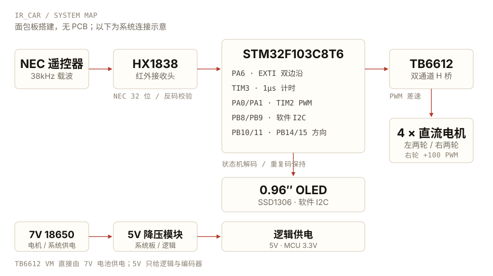
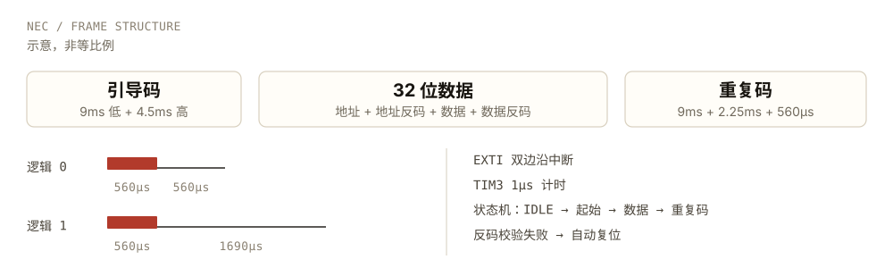
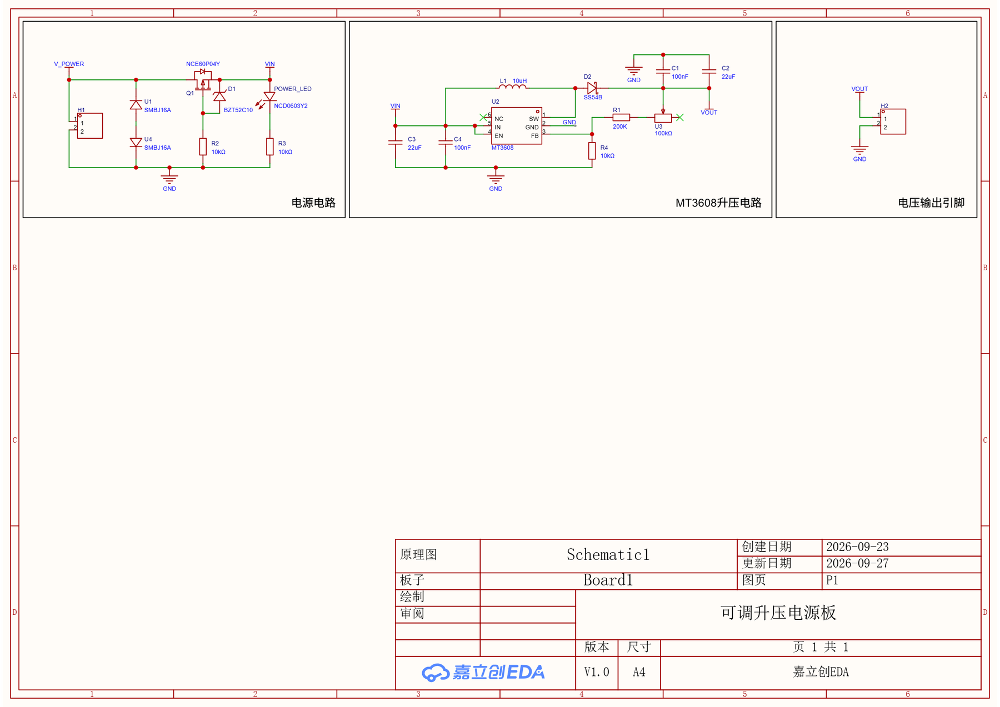
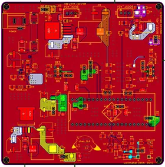
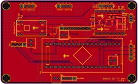

<!DOCTYPE html>
<html lang="zh-CN">
<head>
  <meta charset="utf-8">
  <meta name="viewport" content="width=device-width, initial-scale=1">
  <title>Yi-lne 鈥?涓汉椤圭洰浣滃搧闆?/title>
  <meta name="description" content="Yi-lne 鐨勪釜浜洪」鐩綔鍝侀泦锛歋TM32 鍥轰欢銆佺孩澶栭仴鎺у皬杞︺€丮T3608 鍗囧帇鏉裤€丏CDC 鍗囬檷鍘嬬數婧愭澘涓庝袱杞嚜骞宠　灏忚溅銆?>
  <meta name="theme-color" content="#eaf4ef">
  <link rel="canonical" href="https://yi-lne.github.io/">
  <link rel="icon" href="assets/favicon.svg" type="image/svg+xml">
  <link rel="stylesheet" href="assets/style.css?v=20261120-video">
  <script>document.documentElement.classList.add('js');</script>
  <meta property="og:type" content="website">
  <meta property="og:title" content="Yi-lne 鈥?涓汉椤圭洰浣滃搧闆?>
  <meta property="og:description" content="STM32 鍥轰欢銆佺數婧愪笌 PCB锛氱孩澶栭仴鎺у皬杞︺€丮T3608 鍗囧帇鏉裤€丏CDC 鍗囬檷鍘嬬數婧愭澘銆佷袱杞嚜骞宠　灏忚溅銆?>
  <meta property="og:url" content="https://yi-lne.github.io/">
  <meta property="og:image" content="https://yi-lne.github.io/assets/img/og.jpg">
  <meta property="og:image:width" content="1200">
  <meta property="og:image:height" content="630">
  <meta name="twitter:card" content="summary_large_image">
  <meta name="twitter:image" content="https://yi-lne.github.io/assets/img/og.jpg">
</head>
<body id="top">
  <a class="skip-link" href="#work">璺冲埌椤圭洰</a>

  <header class="site-header">
    <div class="header-inner">
      <a class="logo" href="#top" aria-label="Yi-lne 棣栭〉">
        <span class="logo-mark" aria-hidden="true">YL</span>
        <span class="logo-text">Yi-lne</span>
      </a>
      <nav class="nav" aria-label="涓诲鑸?>
        <a href="#work">宓屽叆寮忛」鐩?/a>
        <a href="#other">鍏朵粬椤圭洰</a>
        <a href="https://github.com/Yi-lne" target="_blank" rel="noopener">GitHub <span aria-hidden="true">鈫?/span></a>
      </nav>
    </div>
  </header>

  <main>
    <section class="hero" aria-labelledby="hero-title">
      <div class="hero-copy">
        <p class="eyebrow">Portfolio / 2026</p>
        <h1 id="hero-title">Yi-lne 鐨勪釜浜洪」鐩?/h1>
        <div class="chips" aria-label="鎶€鏈爤">
          <span class="chip">STM32F103</span>
          <span class="chip">C / HAL</span>
          <span class="chip">FreeRTOS</span>
          <span class="chip">鐢垫簮璁捐</span>
          <span class="chip">PCB</span>
          <span class="chip">鍢夌珛鍒?EDA</span>
        </div>
        <div class="hero-actions">
          <a class="btn btn-primary" href="#work">鏌ョ湅椤圭洰 <span aria-hidden="true">鈫?/span></a>
          <a class="btn btn-ghost" href="https://github.com/Yi-lne" target="_blank" rel="noopener">GitHub <span aria-hidden="true">鈫?/span></a>
        </div>
      </div>
    </section>

    <section class="work" id="work" aria-labelledby="work-title">
      <header class="section-head" data-reveal>
        <div>
          <p class="section-label">Selected work / 04</p>
          <h2 class="section-title" id="work-title">宓屽叆寮忛」鐩?/h2>
        </div>
        <p class="section-note">浠庣‖浠惰璁°€佸浐浠跺紑鍙戯紝鍒拌蒋纭仈璋冦€?/p>
      </header>

      <div class="projects">
        <article class="project" id="ir-car" data-reveal>
          <header class="project-head">
            <span class="project-index" aria-hidden="true">01</span>
            <div class="project-head-text">
              <p class="project-kicker">Infrared / Motion</p>
              <h3>绾㈠閬ユ帶灏忚溅 <span class="status"><i aria-hidden="true"></i>宸插畬鎴?/span></h3>
              <p class="project-summary">STM32F103C8T6 鍥涜疆绾㈠閬ユ帶灏忚溅銆傜敤 EXTI 鍙岃竟娌夸腑鏂€乀IM3 1碌s 璁℃椂涓庡洓鐘舵€佹満瑙ｇ爜 NEC 鍗忚锛孴B6612 鍙岃矾 PWM 椹卞姩锛孫LED 瀹炴椂鏄剧ず瑙ｇ爜鐘舵€併€?/p>
              <div class="tags" aria-label="鎶€鏈爣绛?>
                <span>STM32F103</span><span>NEC</span><span>EXTI</span><span>TB6612</span><span>OLED</span>
              </div>
            </div>
            <a class="repo-link" href="https://github.com/Yi-lne/Embedded-project--IR_Car" target="_blank" rel="noopener">浠撳簱 <span aria-hidden="true">鈫?/span></a>
          </header>

          <div class="project-grid">
            <div class="project-info">
              <ul class="points">
                <li>NEC 32 浣嶈В鐮侊細鍦板潃鐮?/ 鏁版嵁鐮佸弽鐮佹牎楠岋紝寮傚父鑷姩澶嶄綅锛涢噸澶嶇爜淇濇寔锛?00ms 瓒呮椂鑷姩鍋滆溅銆?/li>
                <li>宸€熻浆鍚戯紱鍓嶈繘鏃跺彸杞?+100 PWM 琛ュ伩鐩磋鍋忓樊銆?/li>
                <li>OLED 鏄剧ず鏁版嵁鐮併€佹柟鍚戙€佽剦瀹戒笌淇濇寔鏍囧織锛屽揩閫熷畾浣嶈鐮佷笌閲嶅鐮侀棶棰樸€?/li>
              </ul>
              <div class="stats">
                <div><b>32 浣?/b><span>NEC 鏁版嵁</span></div>
                <div><b>4 杞?/b><span>鐢垫満</span></div>
                <div><b>300 ms</b><span>閲嶅鐮佽秴鏃?/span></div>
                <div><b>1 碌s</b><span>璁℃椂鍒嗚鲸鐜?/span></div>
              </div>
            </div>

            <div class="project-viewer">
              <div class="viewer" data-viewer>
                <figure class="stage">
                  
                  <figcaption>
                    <span class="stage-label">绯荤粺杩炴帴</span>
                    <span class="stage-caption">闈㈠寘鏉挎惌寤?路 鏃?PCB</span>
                  </figcaption>
                </figure>
                <div class="thumbs" role="group" aria-label="IR_Car 鍥剧墖">
                  <button class="thumb is-active" type="button" aria-pressed="true"
                    data-src="assets/img/ir-system.svg" data-label="绯荤粺杩炴帴" data-caption="闈㈠寘鏉挎惌寤?路 鏃?PCB" data-alt="IR_Car 绯荤粺杩炴帴绀烘剰">
                    
                    <span>绯荤粺杩炴帴</span>
                  </button>
                  <button class="thumb" type="button" aria-pressed="false"
                    data-src="assets/img/ir-nec.svg" data-label="NEC 甯х粨鏋? data-caption="寮曞鐮?/ 32 浣嶆暟鎹?/ 閲嶅鐮? data-alt="NEC 甯х粨鏋勭ず鎰?>
                    
                    <span>NEC 甯х粨鏋?/span>
                  </button>
                </div>
              </div>
            </div>
          </div>

          <div class="project-demo">
            <div class="project-demo-head">
              <b>婕旂ず瑙嗛</b>
              <span>IR Car 路 00:35</span>
            </div>
            <video style="display:block;width:100%;max-width:100%;margin:0 auto;" controls preload="none" playsinline poster="assets/img/demo-ir-car.jpg?v=20261120a" aria-label="绾㈠閬ユ帶灏忚溅婕旂ず瑙嗛">
              <source src="assets/video/ir-car.mp4?v=20261120a" type="video/mp4">
              鎮ㄧ殑娴忚鍣ㄤ笉鏀寔瑙嗛鎾斁銆?            </video>
          </div>
        </article>

        <article class="project project--reverse" id="mt3608" data-reveal>
          <header class="project-head">
            <span class="project-index" aria-hidden="true">02</span>
            <div class="project-head-text">
              <p class="project-kicker">Power / Boost</p>
              <h3>MT3608 鍙皟鍗囧帇鏉?<span class="status"><i aria-hidden="true"></i>宸插畬鎴?/span></h3>
              <p class="project-summary">鍩轰簬 MT3608 鐨勫彲璋冨崌鍘嬬數婧愭澘銆傝緭鍏?2鈥?6V锛岃緭鍑?12.6鈥?8V 鍙皟锛岄泦鎴愰槻鍙嶆帴涓?TVS 淇濇姢锛涘畬鎴愬師鐞嗗浘銆丳CB銆佹墦鏍蜂笌瀹炴祴銆?/p>
              <div class="tags" aria-label="鎶€鏈爣绛?>
                <span>MT3608</span><span>Boost</span><span>EDA</span><span>闃插弽鎺?/span>
              </div>
            </div>
            <a class="repo-link" href="https://github.com/Yi-lne/Embedded-project--DCDC_BOOST_MT3608" target="_blank" rel="noopener">浠撳簱 <span aria-hidden="true">鈫?/span></a>
          </header>

          <div class="project-grid">
            <div class="project-info">
              <ul class="points">
                <li>10碌H + SS54B + 22碌F 鍗囧帇涓荤數璺紝200K / 100K 鐢典綅鍣?+ 10K 鍙嶉缃戠粶锛屽疄鐜?12.6鈥?8V 鍙皟銆?/li>
                <li>P-MOS + 绋冲帇绠℃爡鏋侀挸浣嶉槻鍙嶆帴锛孲MBJ16A TVS 鎶戝埗杈撳叆灏栧嘲銆?/li>
                <li>鍢夌珛鍒?EDA 瀹屾垚鍘熺悊鍥?/ PCB / Gerber锛涘疄娴?12.64鈥?7.83V 宸﹀彸锛屼笌鐞嗚鍊煎熀鏈竴鑷淬€?/li>
              </ul>
              <div class="stats">
                <div><b>2鈥?6 V</b><span>杈撳叆</span></div>
                <div><b>12.6鈥?8 V</b><span>杈撳嚭鑼冨洿</span></div>
                <div><b>17.83 V 宸﹀彸</b><span>瀹炴祴涓婇檺</span></div>
                <div><b>89.9 K</b><span>鐢典綅鍣ㄥ疄娴?/span></div>
              </div>
            </div>

            <div class="project-viewer">
              <div class="viewer" data-viewer>
                <figure class="stage">
                  
                  <figcaption>
                    <span class="stage-label">鍘熺悊鍥?/span>
                    <span class="stage-caption">MT3608 路 V1.0</span>
                  </figcaption>
                </figure>
                <div class="thumbs" role="group" aria-label="MT3608 鍥剧墖">
                  <button class="thumb is-active" type="button" aria-pressed="true"
                    data-src="assets/img/mt3608-sch.webp" data-label="鍘熺悊鍥? data-caption="MT3608 路 V1.0" data-alt="MT3608 鍗囧帇鏉垮師鐞嗗浘">
                    
                    <span>鍘熺悊鍥?/span>
                  </button>
                  <button class="thumb" type="button" aria-pressed="false"
                    data-src="assets/img/mt3608-pcb.webp" data-label="PCB" data-caption="V1.0 路 鏉垮崱娓叉煋" data-alt="MT3608 鍗囧帇鏉?PCB">
                    
                    <span>PCB</span>
                  </button>
                </div>
              </div>
            </div>
          </div>

          <div class="project-demo">
            <div class="project-demo-head">
              <b>婕旂ず瑙嗛</b>
              <span>MT3608 路 02:05</span>
            </div>
            <video style="display:block;width:100%;max-width:100%;margin:0 auto;" controls preload="none" playsinline poster="assets/img/demo-mt3608.jpg?v=20261120a" aria-label="MT3608 鍙皟鍗囧帇鏉挎紨绀鸿棰?>
              <source src="assets/video/mt3608.mp4?v=20261120a" type="video/mp4">
              鎮ㄧ殑娴忚鍣ㄤ笉鏀寔瑙嗛鎾斁銆?            </video>
          </div>
        </article>

        <article class="project" id="dcdc" data-reveal>
          <header class="project-head">
            <span class="project-index" aria-hidden="true">03</span>
            <div class="project-head-text">
              <p class="project-kicker">Power / Multi-rail</p>
              <h3>DCDC 鍗囬檷鍘嬬數婧愭澘 <span class="status"><i aria-hidden="true"></i>宸插畬鎴?/span></h3>
              <p class="project-summary">闆嗘垚鍙皟鍗囧帇銆佸彲璋冮檷鍘嬨€佸浐瀹?5V/3.3V 涓庝笁璺?ADC 鐩戞祴鐨勭數婧愭澘銆係TM32 璐熻矗閲囨牱銆丱LED 鏄剧ず涓?BUCK/BOOST 寮€鍏虫帶鍒躲€?/p>
              <div class="tags" aria-label="鎶€鏈爣绛?>
                <span>LGS6302B5</span><span>LM2596</span><span>STM32</span><span>ADC</span><span>OLED</span>
              </div>
            </div>
            <a class="repo-link" href="https://github.com/Yi-lne/Embedded-project--DCDC_BUCK_and_BOOST" target="_blank" rel="noopener">浠撳簱 <span aria-hidden="true">鈫?/span></a>
          </header>

          <div class="project-grid">
            <div class="project-info">
              <ul class="points">
                <li>13.2鈥?5.2V 鍗囧帇 / 1.23鈥?.38V 闄嶅帇 / 5V / 3.3V 澶氳矾杈撳嚭锛?A 淇濋櫓涓濄€?3V 涓?33V 杩囧帇淇濇姢銆?/li>
                <li>ADC1 涓夐€氶亾鎵弿 + DMA 寰幆閲囨牱锛屽垎鍘嬫崲绠椼€佷竴闃舵护娉€?.01V 鏄剧ず锛?00ms 鍒锋柊 OLED銆?/li>
                <li>EXTI + 20ms 瀹氭椂鍣ㄦ秷鎶栨帶鍒?BUCK/BOOST 鍚仠锛屼笂鐢靛悓姝ュ紑鍏崇姸鎬併€?/li>
                <li>璋冭瘯锛氬畾浣嶇ǔ鍘嬬婕忕數銆丷27 涓嬫媺瀵艰嚧 BUCK 澶辨晥锛涘疄娴?OVP 鍔ㄤ綔鐐?14.02V 宸﹀彸銆?/li>
              </ul>
              <div class="stats">
                <div><b>25.8 V 宸﹀彸</b><span>瀹炴祴鍗囧帇涓婇檺</span></div>
                <div><b>7.36 V 宸﹀彸</b><span>瀹炴祴闄嶅帇涓婇檺</span></div>
                <div><b>3 璺?/b><span>ADC 鐩戞祴</span></div>
                <div><b>14.02 V 宸﹀彸</b><span>OVP 鍔ㄤ綔鐐?/span></div>
              </div>
            </div>

            <div class="project-viewer">
              <div class="viewer" data-viewer>
                <figure class="stage">
                  
                  <figcaption>
                    <span class="stage-label">PCB</span>
                    <span class="stage-caption">鍥涘眰鏉?路 V1.0</span>
                  </figcaption>
                </figure>
                <div class="thumbs" role="group" aria-label="DCDC 鍥剧墖">
                  <button class="thumb is-active" type="button" aria-pressed="true"
                    data-src="assets/img/dcdc-pcb.webp" data-label="PCB" data-caption="鍥涘眰鏉?路 V1.0" data-alt="DCDC 鍗囬檷鍘嬬數婧愭澘 PCB">
                    
                    <span>PCB</span>
                  </button>
                  <button class="thumb" type="button" aria-pressed="false"
                    data-src="assets/img/dcdc-sch-1.webp" data-label="鍘熺悊鍥?1" data-caption="鍗囬檷鍘嬫ā鍧? data-alt="DCDC 鍗囬檷鍘嬫ā鍧楀師鐞嗗浘">
                    
                    <span>鍘熺悊鍥?1</span>
                  </button>
                  <button class="thumb" type="button" aria-pressed="false"
                    data-src="assets/img/dcdc-sch-2.webp" data-label="鍘熺悊鍥?2" data-caption="鐢垫簮涓庝富鎺фā鍧? data-alt="DCDC 鐢垫簮涓庝富鎺фā鍧楀師鐞嗗浘">
                    
                    <span>鍘熺悊鍥?2</span>
                  </button>
                </div>
              </div>
            </div>
          </div>

          <div class="project-demo">
            <div class="project-demo-head">
              <b>婕旂ず瑙嗛</b>
              <span>DCDC 路 10:22</span>
            </div>
            <video style="display:block;width:100%;max-width:100%;margin:0 auto;" controls preload="none" playsinline poster="assets/img/demo-dcdc.jpg?v=20261120a" aria-label="DCDC 鍗囬檷鍘嬬數婧愭澘婕旂ず瑙嗛">
              <source src="assets/video/dcdc.mp4?v=20261120a" type="video/mp4">
              鎮ㄧ殑娴忚鍣ㄤ笉鏀寔瑙嗛鎾斁銆?            </video>
          </div>
        </article>

        <article class="project project--reverse" id="balance" data-reveal>
          <header class="project-head">
            <span class="project-index" aria-hidden="true">04</span>
            <div class="project-head-text">
              <p class="project-kicker">Balance / Control</p>
              <h3>涓よ疆鑷钩琛″皬杞?<span class="status status--wip"><i aria-hidden="true"></i>杩唬涓?/span></h3>
              <p class="project-summary">MPU6050 + TB6612 + 鍙岀紪鐮佸櫒锛屽畬鎴愯搴﹀唴鐜?PD 鏁村畾涓庝袱濂楀浐浠讹紙瑁告満 / FreeRTOS锛夛紝缁忓巻涓ょ増 PCB 杩唬锛岀涓夌増瑙勫垝涓€?/p>
              <div class="tags" aria-label="鎶€鏈爣绛?>
                <span>STM32</span><span>MPU6050</span><span>FreeRTOS</span><span>PID</span><span>PCB</span>
              </div>
            </div>
            <a class="repo-link" href="https://github.com/Yi-lne/Embedded-project--Balance_Car" target="_blank" rel="noopener">浠撳簱 <span aria-hidden="true">鈫?/span></a>
          </header>

          <div class="project-grid">
            <div class="project-info">
              <ul class="points">
                <li>濮挎€佽瀺鍚堬細瑁告満浜掕ˉ婊ゆ尝锛埼?= 0.99锛夛紝FreeRTOS 鍗″皵鏇兼护娉紙瑙掑害 + 闆跺亸锛?50Hz锛夛紱瑙掑害鍐呯幆 200Hz锛岄€熷害 / 杞悜澶栫幆 20/100Hz銆?/li>
                <li>鍥轰欢杩唬锛氳８鏈?v1.2 瀹屾垚瑙掑害鍐呯幆 PD 鏁村畾锛汧reeRTOS v1.1 寰皟 PD銆佸崱灏旀浖鍙傛暟锛屽苟閲嶅仛 PWM 鍚堟垚 / 闄愬箙閫昏緫銆?/li>
                <li>璋冨害鏋舵瀯锛氳８鏈?TIM2 1ms 鏍囧織浣嶈皟搴︼紱FreeRTOS 5 浠诲姟 + 闃熷垪閭锛汧reeRTOS 涓紪鐮佸櫒娴嬮€熶笌閫熷害 / 杞悜鐜潎涓?10ms銆?/li>
                <li>閫熷害 / 杞悜鐜唬鐮佸凡瀹炵幇锛岄粯璁ゅ鐩婁负 0锛涘洜缂栫爜鍣ㄧ剨鐐?/ 鐒婄洏鐮存崯鏆傛湭璋冨弬銆俈3 灏嗛噸鍋氱紪鐮佸櫒鎺ュ彛銆佺數婧愯В鑰︿笌闃插憜銆?/li>
                <li>涓ょ増 PCB锛歏1 鐢垫簮鏈В鑰︼紱V2 鐢垫簮瑙ｈ€?+ 闃插弽鎺?+ TVS锛汳PU6050 鎺掓瘝瀹夎瀵艰嚧闆剁偣婕傜Щ锛孷3 璁″垝鐒婃澘銆?/li>
              </ul>
              <div class="stats">
                <div><b>200 Hz</b><span>瑙掑害鐜?/span></div>
                <div><b>5 浠诲姟</b><span>FreeRTOS</span></div>
                <div><b>2 鐗?/b><span>PCB</span></div>
                <div><b>1000 娆?/b><span>闆跺亸鏍″噯</span></div>
              </div>
            </div>

            <div class="project-viewer">
              <div class="viewer" data-viewer>
                <figure class="stage">
                  
                  <figcaption>
                    <span class="stage-label">鍘熺悊鍥?/span>
                    <span class="stage-caption">STM32F103C8T6 路 V1.0</span>
                  </figcaption>
                </figure>
                <div class="thumbs" role="group" aria-label="Balance Car 鍥剧墖">
                  <button class="thumb is-active" type="button" aria-pressed="true"
                    data-src="assets/img/balance-sch.webp" data-label="鍘熺悊鍥? data-caption="STM32F103C8T6 路 V1.0" data-alt="STM32 骞宠　杞﹀師鐞嗗浘">
                    
                    <span>鍘熺悊鍥?/span>
                  </button>
                  <button class="thumb" type="button" aria-pressed="false"
                    data-src="assets/img/balance-pcb.webp" data-label="PCB" data-caption="V2 路 搴曞眰瑙嗗浘" data-alt="STM32 骞宠　杞?PCB">
                    
                    <span>PCB</span>
                  </button>
                </div>
              </div>
            </div>
          </div>

          <div class="project-demo">
            <div class="project-demo-head">
              <b>婕旂ず瑙嗛</b>
              <span>Balance Car 路 01:50</span>
            </div>
            <video style="display:block;width:100%;max-width:100%;margin:0 auto;" controls preload="none" playsinline poster="assets/img/demo-balance.jpg?v=20261120a" aria-label="涓よ疆鑷钩琛″皬杞︽紨绀鸿棰?>
              <source src="assets/video/balance.mp4?v=20261120a" type="video/mp4">
              鎮ㄧ殑娴忚鍣ㄤ笉鏀寔瑙嗛鎾斁銆?            </video>
          </div>
        </article>
      </div>
    </section>

    <section class="other" id="other" aria-labelledby="other-title">
      <div class="other-inner">
        <header class="section-head section-head--dark" data-reveal>
          <div>
            <p class="section-label">Other builds / 03</p>
            <h2 class="section-title" id="other-title">鍏朵粬椤圭洰</h2>
          </div>
        </header>

        <div class="other-list" data-reveal>
          <a class="other-row" href="https://github.com/Yi-lne/Hospital-Query-System" target="_blank" rel="noopener">
            <span class="other-num">01</span>
            <div class="other-text">
              <h3>Hospital-Query-System</h3>
              <p>鍩轰簬 Spring Boot 鐨勫尰闄㈡煡璇㈢郴缁?/p>
            </div>
            <span class="lang">Java</span>
            <span class="other-arrow" aria-hidden="true">鈫?/span>
          </a>
          <a class="other-row" href="https://github.com/Yi-lne/KouTu_c--" target="_blank" rel="noopener">
            <span class="other-num">02</span>
            <div class="other-text">
              <h3>KouTu_c--</h3>
              <p>Windows 鎶犲浘宸ュ叿</p>
            </div>
            <span class="lang">HTML</span>
            <span class="other-arrow" aria-hidden="true">鈫?/span>
          </a>
          <a class="other-row" href="https://github.com/Yi-lne/wx-note-miniPro" target="_blank" rel="noopener">
            <span class="other-num">03</span>
            <div class="other-text">
              <h3>wx-note-miniPro</h3>
              <p>浜戜紬渚跨 路 寰俊灏忕▼搴?/p>
            </div>
            <span class="lang">JavaScript</span>
            <span class="other-arrow" aria-hidden="true">鈫?/span>
          </a>
        </div>
      </div>
    </section>
  </main>

  <footer class="site-footer">
    <p>漏 2026 Yi-lne 路 鍘熺敓 HTML / CSS / JS锛屾墭绠′簬 GitHub Pages</p>
    <p class="footer-links">
      <a href="https://github.com/Yi-lne" target="_blank" rel="noopener">GitHub 鈫?/a>
      <a href="#top">鍥炲埌椤堕儴 鈫?/a>
    </p>
  </footer>

  <dialog id="lightbox" class="lightbox" aria-label="鍥剧墖棰勮">
    <div class="lightbox-inner">
      <button class="lightbox-close" type="button" aria-label="鍏抽棴">脳</button>
      <button class="lightbox-nav lightbox-prev" type="button" aria-label="涓婁竴寮?>鈥?/button>
      
      <button class="lightbox-nav lightbox-next" type="button" aria-label="涓嬩竴寮?>鈥?/button>
      <div class="lightbox-bar">
        <span id="lightbox-caption"></span>
        <span class="lightbox-meta">
          <a id="lightbox-open" class="lightbox-open" href="#" target="_blank" rel="noopener">鍘熷浘 鈫?/a>
          <span id="lightbox-count"></span>
        </span>
      </div>
    </div>
  </dialog>

  <script src="assets/script.js" defer></script>
</body>
</html>


